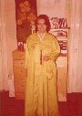

1969
1969 1 jan. Årets motto "Låt oss fortsätta marschera på i full skala."
Även den politiska situationen i Asien har drastiskt förändras. I synnerhet situationen mellan nord och syd på Koreahalvön är farlig. Vi måste övervinna utmaningar, särskilt under 1969. /SMM 1969/05/02 V
. Korean Cultural Foundation
2 feb - 2 maj Han och pres. Eu Hyo Won åker ut på den andra världsturnén. De besöker 21 länder på 3 mänader.
43 par välsignas i Amerika, Japan och Europa.
20 mars Hyun-Jin Nim föds. (10 apr. månkal.)
2 maj Han kommer åter till Korea.
20 juli 40 dagars sommar witnessing.
10 okt. Han reser runt hela Korea.
5 dec
Friedhilde Büchle
kommer till Sverige från Tyskland som ensam 1:a missionär.
Till Norge kom Ingrid Schneider och Danmark Beate Paul - alla 3 tyska
systrar.

We sent two missionaries for Norway and Sweden
Luntmakargatan 79, 3tr Stockholm är en av de första adresserna.
Senare Birger Jarlsgatan som center (=en lägenhet där bröder systrar
bor i separata rum och upplever andligt liv tillsammans) under flera
år
Kuriosa: Tel 172990 blev senare 299040efter flytt från Birjer
Jarlsgatan
Talet
40
heligt återupprättelsetal i UC-terminologi!
{kind=link}
Efter henne kommer som svenska ledare:
- 1969-1978 Friedhilde B.
- 1978-1981 Odd Aune
- 1981-1993 Hans K.
- 1993-1993 Jan-Peter Å.
- 1993-2003 Lorenz J.
- 2003-2006 Hans K.
- 2006-2021 Ing-Marie K.
- 2021... Peter N.
{kind=link}
{kind=link}
Världen: John Lennon (England) och Yoko Ono (Japan) utför
fredsmanifestationer.
En gasledning från Sibirien med gasleveranser till Europa planeras 1969.
Druzjba-ledningen.
Ett sammarbete mellan öst och väst mitt under kalla krigets era.
1 okt 1985 öppnades ett hål i Berlimnuren för att lägga sista gasrören
till väst och Europa.